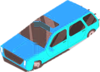

Accepting or Yielding Right-of-Way
Texas law defines right-of-way not as a personal right to seize, but as a statutory duty to surrender passage to prevent collision. Drivers must master priority protocols across terminating T-intersections, highway freeway off-ramps, railroad grade crossings, and active maintenance work zones.




Priority Rules & Conflict Protocols
Vehicle exiting controlled-access highway has statutory dominance.
Feeder road vehicles must surrender right-of-way to avoid ramp pileups.
High highway deceleration speeds make stopping on off-ramps lethal.
Specialized Highway Protocols
Texas statutes dictate specialized yielding protocols across unique roadway scenarios:
Work Zone & Barricade Sanctions
Standard work corridor speeding citation when no workers are present.
TTC § 542.404: Moving violation fines automatically double with active crews.
TTC § 472.022: Driving around high-water road barricade brings jail & rescue costs.
Under Texas Transportation Code § 545.152, what must an operator intending to turn left at an intersection do?
Right-of-Way Compliance Synthesis
Under Texas Transportation Code § 545.151 through § 545.157, right-of-way is governed by statutory duties to surrender passage. Whether turning left across oncoming lanes, navigating freeway feeder access, or stopping at a railroad crossing, compliance prevents catastrophic kinetic impacts. Universal due care is required at all times.